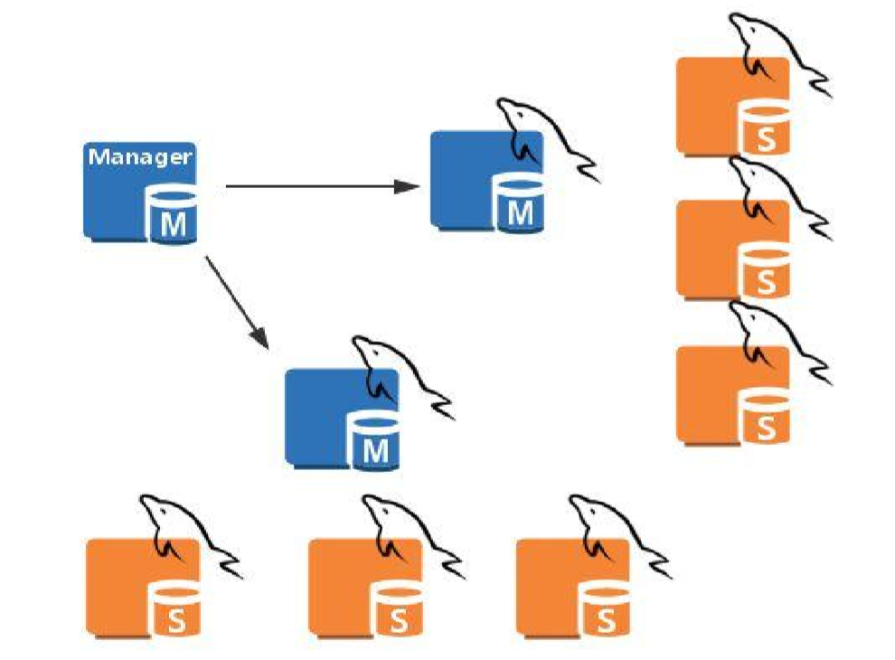
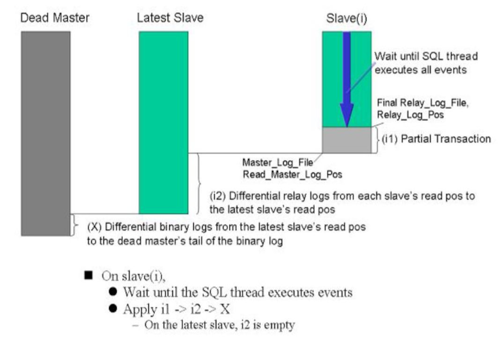

MySQL的高可用(MHA)
MHA:Master High Availability,对主节点进行监控，可实现自动故障转移至其他从节点；通过提升某一从节点为新的主节点，基于主从复制实现，还需要客户端配合实现，目前MHA主要支持一主二从，即一台充当master，一台充当备用master，另外一台充当从数据库，出于机器成本的考虑，淘宝进行了改造，目前淘宝TMHA已经一主一从。
MHA架构

MHA的工作原理

MHA是由一台manager服务器远程监控主服务器,当主服务器挂了提升一台从服务器作为主服务器。
当主节点挂了，manager首先要查看哪台从节点，同步的数据最多，然后提升同步最多的从节点为主节点，再将其余的MySQL服务器对他做从节点。
如果原主节点没彻底死透，manager会让新的主机通过ssh协议远程连接到原先的主节点，拉取二进制日志进行同步。如果主节死透了那就放弃。
MHA搭建
一、环境准备
准备4台主机，管理节点1台，主节点MySQL服务器1台，从节点MySQL服务器2台
|主机|IP|
|:-|:-|
|Manager|192.168.73.111|
|Master|192.168.73.110|
|Slave1|192.168.73.112|
|Slave2|192.168.73.113|
二、将Manager管理节点配置为时间服务器，向所有MySQL服务器提供时间同步
1.安装chrony服务
1 | [root@Manager ~]# yum install -y chrony |
2.修改chrony配置文件
1 | [root@Manager ~]# vim /etc/chrony.conf |
3.启动chrony服务
1 | [root@Manager ~]# systemctl start chronyd |
4.将MySQL服务器与Manager服务器进行时间同步
4.1在所有MySQL主机上修改配置文件并启动，并启动服务
1 | [root@Master ~]# sed -i '/^server 0/i server 192.168.73.111 iburst' /etc/chrony.conf |
4.2确认时间同步
1 | [root@Master ~]# chronyc sources -v |
三、配置ssh为的密钥认证登陆
当主节点宕机，manager会让从节点通过ssh协议去尝试连接主节点，并拉取二进制日志，所以要时用密钥的认证方式让从节点登陆到主节点拉取数据。
1.在manager服务器上生成私钥文件
1 | [root@Manager ~]# ssh-keygen |
2.将公钥文件复制给自己
1 | [root@Manager ~]# ssh-copy-id 127.0.0.1 |
3.将整个~/.ssh目录复制给所有的MySQL主机
1 | [root@Manager ~]# scp -r ~/.ssh 192.168.73.110:/root |
至此所有环境准备完毕
配置主从复制
主节点配置
1.修改配置文件
1 | [root@Master ~]# vim /etc/my.cnf |
2.启动数据库服务
1 | [root@Master ~]# systemctl start mariadb |
3.创建主从复制账号
1 | [root@Master ~]# mysql -e "GRANT REPLICATION SLAVE ON *.* TO 'repluser'@'192.168.73.%' IDENTIFIED BY 'centos';" |
4.添加mha的管理账号，让管理节点远程连接到主机用来设置主从调整
1 | [root@Master ~]# mysql -e "GRANT ALL ON *.* TO 'mhauser'@'192.168.73.%' IDENTIFIED BY 'centos';" |
从节点配置
1.修改配置文件
1 | [root@Slave1 ~]# vim /etc/my.cnf |
2.启动服务
1 | [root@Slave1 ~]# systemctl start mariadb |
3.配置CHANGE MASTER TO
1 | MariaDB [(none)]> CHANGE MASTER TO MASTER_HOST='192.168.73.110', MASTER_USER='repluser',MASTER_PASSWORD='centos',MASTER_PORT=3306,MASTER_LOG_FILE='mariadb-bin.000001',MASTER_LOG_POS=245; |
4.启动线程
1 | MariaDB [(none)]> START SLAVE; |
在Slave2节点上也执行相同的操作，此处步骤省略，需要注意server-id需要修改为和其他主从节点不同
5.测试
主节点导入hellodb库
1 | [root@Master ~]# mysql < hellodb_innodb.sql |
从节点查看是否同步
slave1
1 | [root@Slave1 ~]# mysql -e "SHOW DATABASES;" |
Slave2
1 | [root@Slave2 ~]# mysql -e "SHOW DATABASES;" |
二、配置管理节点及被管理节点
1.在管理节上安装mha4mysql-manager、mha4mysql-node，将两个包放在同一目录下
1 | [root@Manager ~]# yum install *.rpm -y #这两个包有依赖管理需要一起安装 |
2.在所有被管理节点上安装mha4mysql-node
1 | [root@Master ~]# yum install mha4mysql-node-0.56-0.el6.noarch.rpm -y |
1 | [root@Slave1 ~]# yum install mha4mysql-node-0.56-0.el6.noarch.rpm -y |
1 | [root@Slave2 ~]# yum install mha4mysql-node-0.56-0.el6.noarch.rpm -y |
3.在管理节点上创建配置文件
1 | [root@Manager ~]# vim /etc/mha/aap1.conf |
4.做检查
4.1检查ssh连接
1 | [root@Manager ~]# masterha_check_ssh --conf=/etc/mha/aap1.conf |
4.2检查主从复制
1 | [root@Manager ~]# masterha_check_repl --conf=/etc/mha/aap1.conf |
5.以上两项全部成功后启动程序
mha这个程序是跑在前台的，一次性的可以使用nohub或screen来解决跑在前台的问题
1 | [root@Manager ~]# masterha_manager --conf=/etc/mha/aap1.conf |
三、测试
1.在master上跑个存储过程，导入存储过程
1 | [root@Master ~]# mysql hellodb < testlog.sql |
2.调用存储过程
1 | MariaDB [(none)]> USE hellodb |
3.另起一个主节点窗口将主节点断网
1 | [root@Master ~]# ifdown ens33 |
4.manager端完成切换退出，查看日志，查看新的主节点是哪台slave
1 | [root@Manager app1]# tail /data/mastermha/app1/manager.log |
由于从节点在配置文件中定义的为read-only，此时被提升为主能执行写操作时应为管理服务器上有管理账号，他将从节点的服务器全局变量read_only给关闭了
1 | [root@Slave1 ~]# mysql -e "SELECT @@read_only;" |
为了防止服务服务重启再次变为read-only，此时需要对新主节点的配置文件进行修改将read-only行注释
1 | [mysqld] |
四、测试新的主节点
1.对hellodb.teachers表插入数据
1 | [root@Slave1 ~]# mysql -e "INSERT hellodb.teachers VALUES(5,'Tang San',30,'M');" |
2.Slave2主机上查看是否同步
1 | [root@Slave2 ~]# mysql -e "SELECT * FROM hellodb.teachers;" |
其他事项
当原主节点被修复后，将其添加为从节点使用。